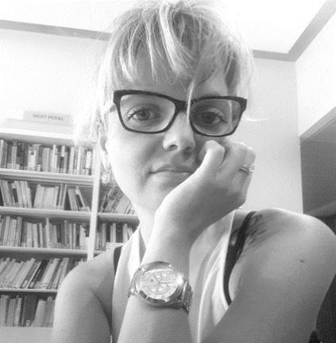

La thèse doctorale : un combat sans merci, entre fascination et désillusion
par Anne-Charlotte KERVOELEN
Les batailles de la vie ne sont pas gagnées par les plus forts, ni par les plus rapides, mais par ceux qui n’abandonnent jamais.
Hassan II, Roi du Maroc
La quête perpétuelle du Graal… Dans l’imaginaire collectif, détenir le titre de docteur a toujours représenté l’idée d’une impétueuse élite sociale et intellectuelle, dont les partisans, socialement à part, auraient, à l’évidence, des talents incommensurables, plus fous les uns que les autres… !
Halte ! La réalité s’impose.
Diplôme de troisième cycle de 8 années d’études après le baccalauréat, et se préparant nécessairement après l’obtention d’un diplôme conférant le grade de master ou d’un niveau équivalent, le titre prestigieux de docteur n’est assurément pas à la portée de tout un chacun, certes ; et il s’entend.
Le doctorat est un moment de la vie du chercheur particulièrement fascinant, pouvant se révéler sans conteste tout aussi troublant, tant ses attraits psychologiques, sociaux, et personnels en s’avèrent directement impactés.
Flexibilité dans le temps, flexibilité dans l’espace… À première vue, le chercheur bénéficie d’un luxe incontesté et incontestable à toutes les échelles, mais qu’en est-il réellement ?
Le temps de la recherche peut légitiment être perçu, pour certains, comme un véritable confort : un temps que l’on peut aménager librement et malaxer à souhait, à l’image d’un travail sans horaires préalablement fixés !
Pas de contremaitre pour rendre compte à sa hiérarchie de sa propre productivité au sein de l’usine pour laquelle on est embauché, ni de pointeuse pour bel et bien vérifier de sa présence au sein de son poste de travail ou enfin, nulle obligation de saisir l’effectivité de ses temps sur un logiciel informatique prévu à cet effet !
Quel privilège !
Mais quand le chercheur travaille-t-il donc ? La réponse est à double tranchant. Elle se situe dans ce laps de temps complètement incertain, des plus flous : entre jamais et tout le temps … Aucune frontière, aucun rythme, aucune limite, le fil du temps de la recherche est très vite insaisissable et ce dernier peut dès lors se transformer en une véritable substance nuisible, relativement inquiétante parfois.
Pas de place aisée aux arrêts maladie, aux congés maternité, … et qui ose parler de véritables vacances ?
Blasphème !
Sans contredit, tout le temps non travaillé ne relève pas, à l’instar des gens « normaux », si bien qu’ils existent, du loisir légitime mais bel et bien d’une authentique improductivité coupable et affreusement destructrice. La thèse est un combat journalier au sein duquel gravitent des procédés néfastes et relativement pervers à l’instar de l’autocontrôle, de l’autoaccusation et de l’autopunition. D’ordinaire, ces derniers sont jugés beaucoup plus efficaces par le chercheur que tout autre dispositif extérieur qui seraient à l’évidence beaucoup plus sain et notoirement plus équilibré !
Mais pourquoi donc ?
La réponse est claire et laconique : le doctorat est avant tout une passion, le fruit d’un élan intellectuel désiré depuis longtemps ! L’exposer tel un travail borné par de piètres limites ou de quelconques horaires serait une façon très facile de le refroidir. Pour beaucoup, il en serait même là, une triste idée de le réduire, pire encore, de le banaliser très clairement.
La réalité quotidienne d’un doctorant est exclusive : ses journées ne sont potentiellement qu’extrêmes. Il n’y a pas de mesure possible entre la productivité et l’improductivité. Travailleur à l’excès et n’ayant jamais peur d’aller au bout de ses limites, le chercheur travaille régulièrement à cet effet par « séquences ». En vérité, le temps ici ne s’analyse aucunement à l’échelle de la journée mais uniquement au temps qu’il sera effectivement nécessaire pour accomplir un travail purement donné ou un objectif qu’il se sera lui-même fixé. Déterminé, tenace, et courageux, il aura au bout ! Qu’importe qu’il s’agisse de la nuit, du jour, de quelques heures, plusieurs jours et de semaines entières : l’objectif doit être atteint ! coûte que coûte !
Quelle folie, quelle démesure …
Où se trouve l’équilibre ? Sponte sua, il n’y a pas !
Comment ne pas se perdre ainsi dans cet univers si hostile ?
Au début, la thèse est souvent un projet exaltant, enivrant même ! Néanmoins, la difficulté majeure consiste à maintenir le cap, tenir la distance tel un véritable coureur cycliste de haut niveau. La clé de la réussite relève très certainement d’une jonction nécessaire entre la patience et la constance. La liberté évidente qu’offre la recherche peut vicieusement changer de versant : la solitude, le malaise social, le doute, tels sont ces sentiments qui peuvent aisément prendre une place rapidement inconsidérée.
Seul, désespérément seul.
La solitude du thésard est d’autant plus absolue que l’université ne peut prétendre à faire briller ses grandes qualités en matière d’encadrement. Les sujets de recherche sont très pointus, très scientifiques, très précis et spécifiques à une matière en particulier.
La solitude s’instaure très facilement : seul à l’affront du temps, seul à l’épreuve de ses propres idées, seul face à son ordinateur, seul à comprendre ses théories parfois inextricables, seul dans un monde qui lui appartient en définitive…
Mais du bon sens, de la clairvoyance s’imposent … car, de toute expérience doit ressortir une once de positivisme : cette solitude fait nettement partie intégrante de l’apprentissage : le chercheur se forge. Évoluant dans un milieu obscur, où la temporalité déstructurée l’oblige à puiser au plus profond de ses ressources intrinsèques pour perpétuellement progresser, il en deviendra nécessairement plus fort.
Une ténacité qui se pourra parfaitement se manifester non seulement sur une échelle typiquement intellectuelle à versant professionnel pour certains, mais également sur un plan beaucoup plus humain pour d’autres.
Par ailleurs, de cet environnement relativement abscons, le doctorant s’inscrit pleinement au sein d’une situation de mobilité sociale d’où naissent de multiples zones d’inconfort desquelles il est souvent très difficile de se départir.
De telles impressions d’impostures peuvent se révéler à travers plusieurs réseaux de sociabilité ; qu’ils soient amicaux, familiaux, conjugaux ou bien encore professionnels.
Le sentiment terriblement vécu de trahir ses pairs, ses plus proches parents, tout simplement car il fait « sien » d’autres codes –culturels, politiques, sociaux, économiques…- se marie régulièrement d’une prise de distance qui s’opère naturellement avec le temps. Il est également fait jeu des corps à l’image du langage qui tend à évoluer mais également quelquefois de sa tenue vestimentaire (qui, aujourd’hui, a tellement d’importance !).
De surcroit, un sentiment de souffrance a vocation à poindre pour les plus sensibles ou les moins bien rodés : dès lors que l’on fait d’un projet, l’ambition de toute sa vie, il est clairement difficile de faire fi du désintéressement des plus absolus, de la part de son entourage, de la teneur et de l’enjeu de son travail.
Pardi ! ... Pauvre de lui, perdrai t- il son temps ?
L’apparition potentielle de malentendus, de frictions voire de conflits d’une plus ou moins grande intensité vont naturellement rendre le travail de recherche extrêmement plus douloureux, voire intolérable lorsqu’une prise de hauteur suffisamment notable n’est pas prise tant sur le plan émotionnel qu’au niveau sentimental. A l’évidence, des périodes en lien direct avec la théorisation et la politisation du vécu personnel du chercheur à l’image d’évènements forts de sa vie (rencontre de l’âme sœur, ruptures amoureuses, ou encore de l’expérience heureuse d’une période de maternité/paternité…) peuvent avoir des répercussions éminemment brutales, parfois irréversibles.
De grâce ! Prenez soin de vous et de votre corps ; il s’agit là du seul et unique endroit que vous avez pour vivre !
De la période enivrante où l’on prend temps et plaisir à définir son légendaire de sujet de thèse, à l’épreuve fastidieuse de l’éternelle porosité entre vie privée et travail doctoral ; s’engager dans le milieu de la recherche s’accompagne nécessairement d’une réflexivité poussée et rigoriste sur soi-même, sa propre identité, et son parcours de vie.
Un travail important d’introspection pour le chercheur, bien plus que salvateur lui sera par conséquent, inévitable !
Regardez à l’intérieur de vous … et prenez de la hauteur.
Nous sommes tous, de façon perpétuelle, parasités par nos pensées personnelles, par nos propres émotions et même celle des autres ! Des stimuli provenant encore et toujours de l’extérieur – assurément, cela ne suffisait pas – viennent s’y greffer pour couronner un tout au quotidien, absolument grandiose !
De quoi rendre fou !
Autant dire qu’un tel recul sur soi-même tout au long de l’expérience doctorale, à la fois exigeante et astreignante, laisse bien peu de place à l’implication affective.
Cette prise de recul est d’autant plus indispensable que les mois durant, la thèse peut très rapidement prendre une mauvaise tournure. Les réseaux sociaux sont à l’image aujourd’hui de ce fléau bien connu : des groupes fleurissent sur Facebook regroupant des milliers de doctorants aux noms très incantatoires à l’exemple précis des suivants : « Ma thèse de doctorat, c’est mon Irak à moi » ou encore « Les thésards qui trouvent leur thèse inter-« minable » », et enfin « Et ta thèse, elle avance ? Mais, ta gueule ! ». À cet effet, une étude a été menée par l’Université de Bretagne mettant en exergue le fait que la thèse était source majeure de stress pour 73,6 % des doctorants.
En découlent donc les symptômes communément vécus par la plupart des personnes pouvant subir des périodes de vies sombres et particulièrement intenables : dépressions, addictions diverses, angoisses, insomnies, hyperémotivité, sensibilité exacerbée, voire même dans les cas plus extrêmes, des excès de violences.
Les phases malaisées, les doutes et les peurs, les brisures définitives font partie intégrante de la trajectoire d’une thèse ; il appartiendra à chaque chercheur de les apprivoiser et de tenter de les surmonter, (ou pas) …
Et qu’il n’en déplaise à certains, il s’agit bien là, sans nul doute, de tout ce qui fera le lustre, le charme, la magie et le prestige d’un potentiel Docteur !
D’un constat clairement établi, certes relativement pernicieux au gré des circonstances, une question évidente s’impose donc : renoncer ou conclure ?
Indubitablement, lorsque l’on entreprend un projet d’une telle envergure, la motivation n’est jamais constante et linéaire. Elle connait des hauts dès lors le doctorant est en phase avec lui-même, plutôt bien organisé, assez équilibré dans son temps de travail et relativement satisfait de sa productivité. La découverte tant espérée d’un ouvrage si longtemps recherché, le simple fait de trouver la bonne formulation à écrire au bon endroit, découvrir avec force les grandes fondations de son plan, ou encore finaliser la rédaction d’un paragraphe ou d’un chapitre…
Oui, le monde, à cet instant T, nous appartiendrait presque ! Qu’il est beau de rêver !
Mais, elle peut tout aussi supporter d’éternels moments de creux lorsque les jours, voire les semaines se succèdent sans que la thèse n’avance, ne serait-ce, d’un pas infime. Le sujet s’avère, de facto, infaisable. Une sclérose brutale et stoïque : le noir est absolument complet.
Cher Esprit Humain, bienvenue dans les méandres impénétrables de ton Abîme … !
Malheureusement, c’est ainsi que beaucoup de thèses demeurent toujours en souffrance et n’en finiront probablement jamais. Leur destin ne se résumera qu’à « mourir », leur auteur les ayant soit négligée, soit désertée, ou encore abandonnée pour d’autres opportunités plus saisissantes et/ou épanouissantes, notamment dans un cadre professionnel très certainement plus propice à l’épanouissement de l’individu. Et il en va de soi car c’est un choix pour sa propre vie, et surtout sa santé, à prendre dans toutes ses composantes !
La note ne doit cependant nullement s’achever sur une touche négative.
Le combat doit toujours être mené ; il en vaut la peine ! Oui, bien entendu, il en vaudra toujours la peine : non seulement pour avancer, pour aller de l’avant mais aussi pour en sortir plus fort à l’avenir, et conquérant !
Car l’homme, pour percevoir toute l’étendue de sa force a en amont besoin d’avoir à combattre quelque chose de sensiblement impossible à vaincre … tout l’enjeu fascinant et glorieux d’une thèse !
Les moteurs principaux inhérents à la prise d’une décision tendant à cette trajectoire doctorale (savoir, l’intérêt personnel, la passion intellectuelle, et le besoin immodéré d’accomplissement de soi dans l’univers de la connaissance), doivent pleinement primer, et ce, plus que tout le reste.
La plume de René CHAR ne pourra, à ce titre, mieux conclure mes propos à la lumière de cette citation singulièrement expressive…
Partager cette page